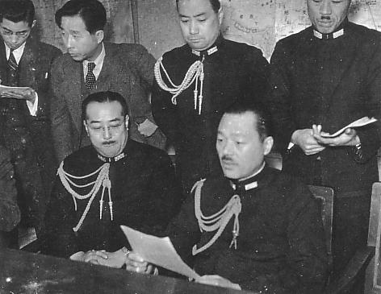

World War II: The "Good War"

In a letter to Josiah Quincy on September 11, 1773, Benjamin Franklin wrote, "There never was a good war or a bad peace." Interesting thought. Interesting date. Author Studs Terkel wrote a book about World War II, which he called "The Good War," a sentiment often felt, most probably because America's enemies of World War II—Nazi Germany and militarist Japan—were of such evil character that anything done to defeat their imperial dreams was deemed good. In the aftermath, most Americans accepted that view of a "good" war, at least for a decade or two. All the same, although World War I, the Great War, was probably the worst war ever fought for the soldiers on the front lines, World War II was nevertheless unprecedented in the amount of destruction caused and the number of lives lost.
Despite its being called the "good war," no one could ever claim that World War II was anything but a horror; at its end at least fifty million human beings had perished—a level of destruction scarcely imaginable, even after the carnage of World War I. In 1939 when the war began in Europe, one had a sense that it was nothing but the latest round in an endless cycle of violence going back through the centuries—to the Hundred Years War, the Thirty Years War, the War of the Roses, the imperial wars, and wars of revolution—and only a fool could hope this would be the last war. Woodrow Wilson had dreamed of making the world safe for democracy, but now it seemed as if what happened at Versailles had merely made the world safe for totalitarian dictators or appeasers.
So once again the world was plunged into darkness, into the hideous abyss of destruction and despair until the nations emerged on the other side to yet another world, full of uncertainty, shrouded by the clouds of radiation that floated across the heavens from Hiroshima and Nagasaki. People wondered, "What will the next one be like?"
Following are some important factors about World War II in general:
- World War II was in many ways a continuation of World War I. There can be no doubt that the peace settlement arrived at during the Versailles Conference of 1919 contained within it the seeds of World War II, in that it almost certainly guaranteed that Germany would seek retribution.
- The technological advances that had begun in the First World War were carried even further in World War II, culminating in the use of the atomic bomb against Hiroshima and Nagasaki in August 1945.
- The United States was much more heavily involved in World War II than World War I, although the war had been raging for years before the United States became directly involved. Before the United States was formally involved, America was directly and indirectly assisting the British in the Atlantic. In the end some 13–14 million Americans served in uniform during the war period, and American factories and plants produced almost 30 percent of all the materiel used by the Allies.
Activity not available on mobile devices (description)
More Resources